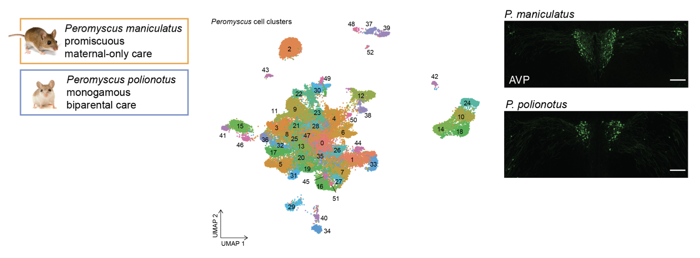

Research
The existence of innate animal behaviors that are heritable and don't require learning suggests that behavior can be controlled, in part, by genes. However, only a handful of behavior-modifying genes are known, and even less is known about the mechanisms by which they act. My research leverages natural variation in innate animal behavior and uses comparative genomics, single-cell transcriptomics, and computational and statistical methodologies to identify the molecular products responsible for governing behavior. My interdisciplinary research program combines my PhD training in computational genomics with my postdoctoral training in behavioral genetics.
My lab will have to major arms of research: (1) identifying the genetic mechanisms that specify mating and parental care behavior across monogamous and promiscuous rodents, and (2) using computational methods to identify novel, conserved neuropeptides and experimentally probing their biological functions.
Genetic Basis of Reproductive Behaviors

I seek to identify the genetic pathways involved in controlling mating and parental care behaviors. To do so, I take advantage of two sister species of deer mice (P. maniculatus and P. polionotus) with divergent reproductive behaviors. P. maniculatus mate promiscuously and only mothers exhibit parental care while P. polionotus produce offspring with the same mate across their lifetime and both fathers and mathers provide parental care. Using single-nucleus RNA-sequencing and immunostaining, I have identified two hypothalamic cell types -- arginine vasopression neurons and galanin-expressing neurons -- whose abundance appears to govern the extent of parental care innately performed by a species. We are currently performing a large-scale genetic cross to test the association between cell type abundances and parental care behaviors. My independent research lab will continue to investigate the mechanism by which these cell types control behavior, and the genetic determinants of their abundances.
Neuropeptide Discovery

Neuropeptides are potent signaling molecules that play vital roles ranging from regulating sleep to feeding behavior to social behavior. My postdoctoral work also suggests neuropeptides are important evolutionary dials for tuning behavior. While over 100 neuropeptides are known, more likely await discovery: their small size and rapid evolution hinder bioinformatics identification, and those that are expressed in very specific cell types are challenging to detect by bulk RNA-seq or mass spectrometry. I developed a computational screen to uncover new neuropeptides conserved across vertebrates by using advancements in machine learning and large language models to identify small, secreted peptides and single-cell sequencing data to identify genes expressed in specific neuronal cell populations. I have discovered one putative neuropeptide that appears to impact fertility when knocked out of rodent animal models. This work is ongoing and will be continued in my independent lab.